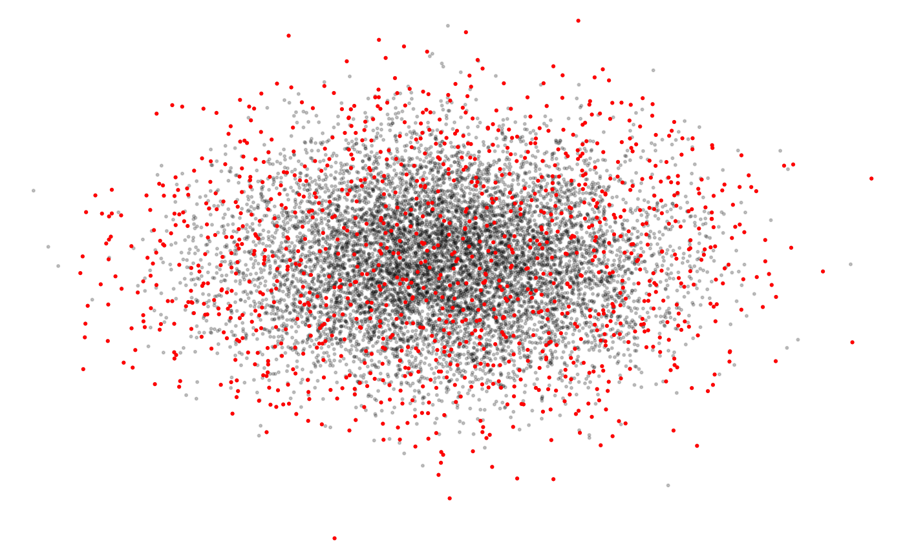

Sample observation data on a spacetime grid to reduce spatiotemporal bias.
Usage
grid_sample(
x,
coords = c("longitude", "latitude", "day_of_year"),
is_lonlat = TRUE,
res = c(3000, 3000, 7),
jitter_grid = TRUE,
sample_size_per_cell = 1,
cell_sample_prop = 0.75,
keep_cell_id = FALSE,
grid_definition = NULL
)
grid_sample_stratified(
x,
coords = c("longitude", "latitude", "day_of_year"),
is_lonlat = TRUE,
unified_grid = FALSE,
keep_cell_id = FALSE,
by_year = TRUE,
case_control = TRUE,
obs_column = "obs",
sample_by = NULL,
min_detection_probability = 0,
maximum_ss = NULL,
jitter_columns = NULL,
jitter_sd = 0.1,
...
)Arguments
- x
data frame; observations to sample, including at least the columns defining the location in space and time. Additional columns can be included such as features that will later be used in model training.
- coords
character; names of the spatial and temporal coordinates. By default the spatial spatial coordinates should be
longitudeandlatitude, and temporal coordinate should beday_of_year.- is_lonlat
logical; if the points are in unprojected, lon-lat coordinates. In this case, the points will be projected to an equal area Eckert IV CRS prior to grid assignment.
- res
numeric; resolution of the spatiotemporal grid in the x, y, and time dimensions. Unprojected locations are projected to an equal area coordinate system prior to sampling, and resolution should therefore be provided in units of meters. The temporal resolution should be in the native units of the time coordinate in the input data frame, typically it will be a number of days.
- jitter_grid
logical; whether to jitter the location of the origin of the grid to introduce some randomness.
- sample_size_per_cell
integer; number of observations to sample from each grid cell.
- cell_sample_prop
proportion
(0-1]; if less than 1, only this proportion of cells will be randomly selected for sampling.- keep_cell_id
logical; whether to retain a unique cell identifier, stored in column named
.cell_id.- grid_definition
list defining the spatiotemporal sampling grid as returned by
assign_to_grid()in the form of an attribute of the returned data frame.- unified_grid
logical; whether a single, unified spatiotemporal sampling grid should be defined and used for all observations in
xor a different grid should be used for each stratum.- by_year
logical; whether the sampling should be done by year, i.e. sampling N observations per grid cell per year, rather than across years, i.e. N observations per grid cell regardless of year. If using sampling by year, the input data frame
xmust have ayearcolumn.- case_control
logical; whether to apply case control sampling whereby presence and absence are sampled independently.
- obs_column
character; if
case_control = TRUE, this is the name of the column inxthat defines detection (obs_column > 0) and non-detection (obs_column == 0).- sample_by
character; additional columns in
xto stratify sampling by. For example, if a landscape has many small islands (defined by anislandvariable) and we wish to sample from each independently, usesample_by = "island".- min_detection_probability
proportion
[0-1); the minimum detection probability in the final dataset. Ifcase_control = TRUE, and the proportion of detections in the grid sampled dataset is below this level, then additional detections will be added via grid sampling the detections from the input dataset until at least this proportion of detections appears in the final dataset. This will typically result in duplication of some observations in the final dataset. To turn this off this feature usemin_detection_probability = 0.- maximum_ss
integer; the maximum sample size in the final dataset. If the grid sampling yields more than this number of observations,
maximum_ssobservations will be selected randomly from the full set. Note that this subsampling will be performed in such a way that all levels of each strata will have at least one observation within the final dataset, and therefore it is not truly randomly sampling.- jitter_columns
character; if detections are oversampled to achieve the minimum detection probability, some observations will be duplicated, and it can be desirable to slightly "jitter" the values of model training features for these duplicated observations. This argument defines the column names in
xthat will be jittered.- jitter_sd
numeric; strength of the jittering in units of standard deviations, see
jitter_columns.- ...
additional arguments defining the spatiotemporal grid; passed to
grid_sample().
Details
grid_sample_stratified() performs stratified case control sampling,
independently sampling from strata defined by, for example, year and
detection/non-detection. Within each stratum, grid_sample() is used to
sample the observations on a spatiotemporal grid. In addition, if case
control sampling is turned on, the detections are oversampled to increase the
frequecy of detections in the dataset.
The sampling grid is defined, and assignment of locations to cells occurs, in
assign_to_grid(). Consult the help for that function for further details on
how the grid is generated and locations are assigned. Note that by providing
2-element vectors to both coords and res the time component of the grid
can be ignored and spatial-only subsampling is performed.
Examples
set.seed(1)
# generate some example observations
n_obs <- 10000
checklists <- data.frame(longitude = rnorm(n_obs, sd = 0.1),
latitude = rnorm(n_obs, sd = 0.1),
day_of_year = sample.int(28, n_obs, replace = TRUE),
year = NA_integer_,
obs = rpois(n_obs, lambda = 0.1),
forest_cover = runif(n_obs),
island = as.integer(runif(n_obs) > 0.95))
# add a year column, giving more data to recent years
checklists$year <- sample(seq(2016, 2020), size = n_obs, replace = TRUE,
prob = seq(0.3, 0.7, length.out = 5))
# create several rare islands
checklists$island[sample.int(nrow(checklists), 9)] <- 2:10
# basic spatiotemporal grid sampling
sampled <- grid_sample(checklists)
# plot original data and grid sampled data
par(mar = c(0, 0, 0, 0))
plot(checklists[, c("longitude", "latitude")],
pch = 19, cex = 0.3, col = "#00000033",
axes = FALSE)
points(sampled[, c("longitude", "latitude")],
pch = 19, cex = 0.3, col = "red")

# case control sampling stratified by year and island
# return a maximum of 1000 checklists
sampled_cc <- grid_sample_stratified(checklists, sample_by = "island",
maximum_ss = 1000)
# case control sampling increases the prevalence of detections
mean(checklists$obs > 0)
#> [1] 0.1005
mean(sampled$obs > 0)
#> [1] 0.1072363
mean(sampled_cc$obs > 0)
#> [1] 0.171627
# stratifying by island ensures all levels are retained, even rare ones
table(checklists$island)
#>
#> 0 1 2 3 4 5 6 7 8 9 10
#> 9505 486 1 1 1 1 1 1 1 1 1
# normal grid sampling loses rare island levels
table(sampled$island)
#>
#> 0 1 3
#> 1094 52 1
# stratified grid sampling retain at least one observation from each level
table(sampled_cc$island)
#>
#> 0 1 2 3 4 5 6 7 8 9 10
#> 912 87 1 1 1 1 1 1 1 1 1